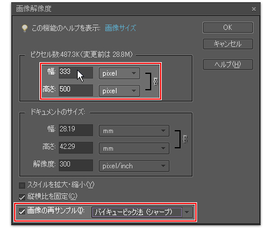

解像度（dpi）とは（ドット・ピクセル・インチ）(インチ内に幾つの点が有るか)
(DPI)」といった言葉や単位を目にします。
「写真を印刷したが、どうもカクカクしている」という経験をお持ちの方もいらっしゃるかと思いますが、これは
「解像度」を理解していない事に原因がある事が多いでしょう。
ここでは、「画像データの解像度」・「スキャナ読込時の解像度」・「プリンタの解像度」・「モニタの解像度」の
３つの視点から説明してみたいと思います。少々ややこしい説明ですが、特にプリンタでの印刷をする場合には必要な
知識ですので、よく読んでみてください。
|
大きいマス目
＝低解像度・マス目の数が少ない ＝データ量が小さい |
小さいマス目
＝高解像度・マス目の数が多い ＝データ量が大きい |
また、マス目の総数が同じであれば、ひとつひとつのマス目が大きいものの方が、当然ながら全体の広さ（印刷時の大きさ）も広く（大きく）なりますね。この密度が、
すなわち「解像度」なのです。
スキャナ読み込み時の解像度 プリンタの解像度 モニタの解像度 は自分で考えて下さい。
図解
|
||||||||||
実際にプリントアウトした大きさである実寸と、Webで見るピクセル寸法の違いがおわかり頂ければ、あなたは解像度はもうバッチリです。 |
| 画像解像度の変更画面 | |
 |
写真趣味者 解像度300は変更（目的に合わせて） Web（ﾃﾞｨｽﾌﾟﾚｲ表示）では解像度 ７２ Pixel/inch が 基本 ﾄﾞｷｭﾒﾝﾄｻｲｽﾞは印刷時の大きさ（100～300Pixel/センチ） 印刷して普通の人が目で見て理解出来るのは100Pixel/センチ程度） 画像解像度の変更画面で何べんも練習することであなたは 解像度はもうバッチリに成ります。 面倒がらずにやれば直ぐに理解出来ます。 写真焼付け業者では（100～300Pixel/インチ）が限度？？？ インチは約2.5センチ 通の |